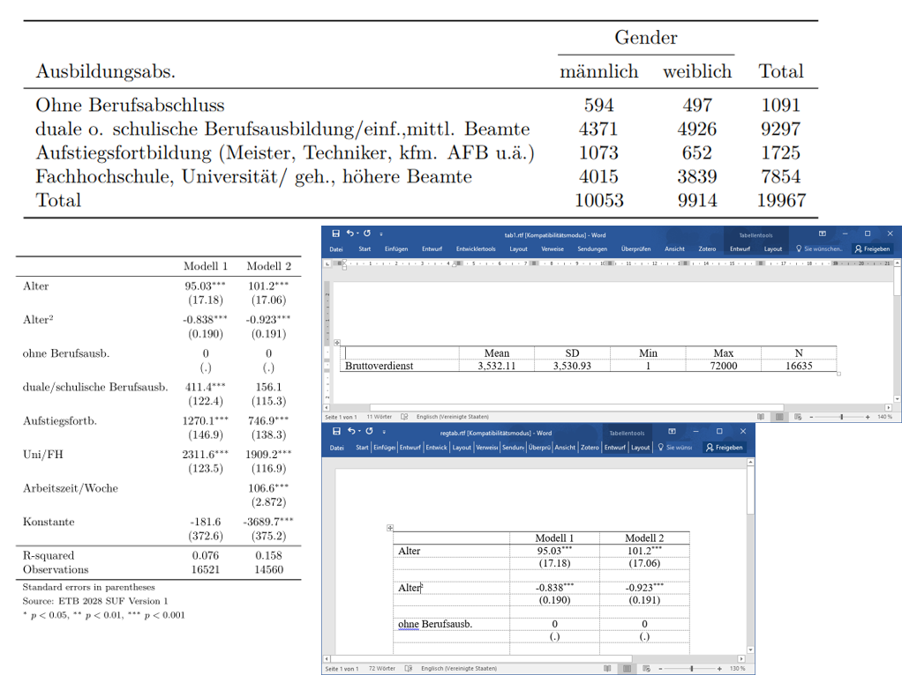

Stata: Erzeugen von Deskriptions- und Regressionstabellen
Export in Word und Latex
2021-12-15
Herzlich Willkommen
Hier entsteht das Begleitskript für die Weiterbildung Stata – Erzeugen von Deskriptions- und Regressionstabellen am BIBB von Andreas Filser am 16.12.2021
